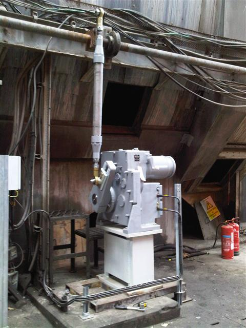
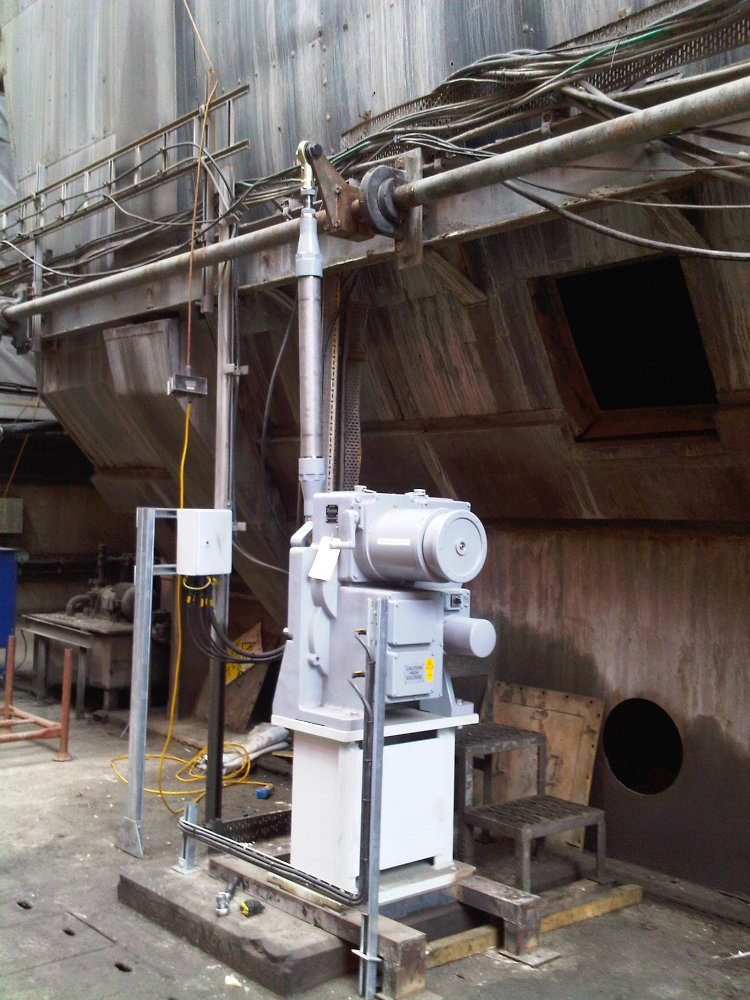

Beck Actuator Installations
Actuator Installs Since 1956
Since 2007, over 300 installations of Beck Actuators have taken place in Europe. This is in addition to the existing installed base that dates back to 1956.
Clients installing Beck products include the following;
UK Power Station ID Fan Damper Upgrade
This major UK Power Station was looking for an alternative to the obsolete ID Fan Damper Actuator system, originally installed when the station was commissioned.
The system consisted of a hydraulic cylinder which was driven by an electric motor driven hydraulic power pack.
As well as being obsolete equipment, the system suffered from a number of other issues, including;
- The operation of the ID fans had caused concern for a while as the performance, precision and repeatability required by the system was not being met. This had a potential to affect the efficiency of the whole unit.
- The power pack needed to be constantly energised to maintain a head of pressure for the cylinder operation. This meant that once the required pressure was met, the remaining oil was crashed over the relief valve. As well as being a waste of energy, having the oil constantly going over a relief valve can be considered a maintenance issue.
- The system required regular oil filter changes to maintain the oil at a suitable oil cleanliness level. As well as being an expensive consumable, having to change oil filters regularly is an additional maintenance cost, and the disposal of the used filters is an environmental issue and cost.
- The oil cylinder seals were susceptible to leaks, which as well as affecting the operation of the system, created a potential environmental hazard.

The station gave a list of criteria that they required as part of the upgrade project. These included being able to meet, or better the current hydraulic system stoke timing, have the best possible operating resolution and repeatability, and be as maintenance free as possible. Being on such important installation reliability was also a key issue for the station.
A number of actuator suppliers, including the site actuator/valve maintenance company where invited to supply proposals for the upgrade.
After much research and consideration, Beck drives were chosen to be the supplier of the upgrade package, despite the site never having fitted Beck drives before, and despite this being one of the most expensive options. Beck were however able to meet the very strict technical requirements demanded by the application.
In addition to supplying the drives, Beck also undertook to provide the necessary assistance to install and commission the drives. The whole installation of the 2 units was completed in approximately 5 hours.
The new Beck installation will remove many of the issues that affected this ID Fan system, providing a much better level of damper control, and repeatability, which in turn should contribute to improving the installation efficiency. The power requirement for the system will also be significantly reduced, as the Beck drive only energises in response to a system demand.
The General specification of the drives as installed are;
- Output Torque 10846nm
- Timing for the full 100° actuator crank arm 20 seconds (configurable from 15 to 300 seconds).
- Minimum Step size 0.1°
- Hysteresis 0.25% of span at any point
- Current Demand for Drive motor 3.5 amps approx.
In addition the maintenance requirements of the ID Fan Damper actuation system will be significantly reduced, the drives being able to run between outages without maintenance.
Finally a large environmental hazard, with all its associated costs and risks has been removed from site.
